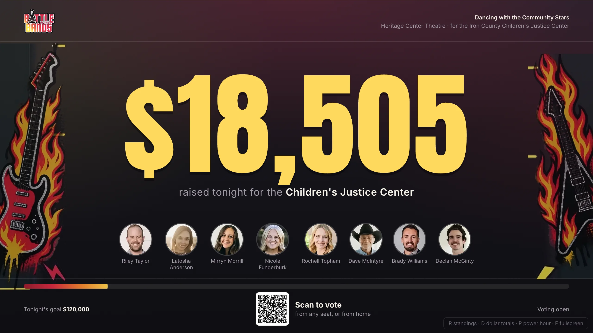
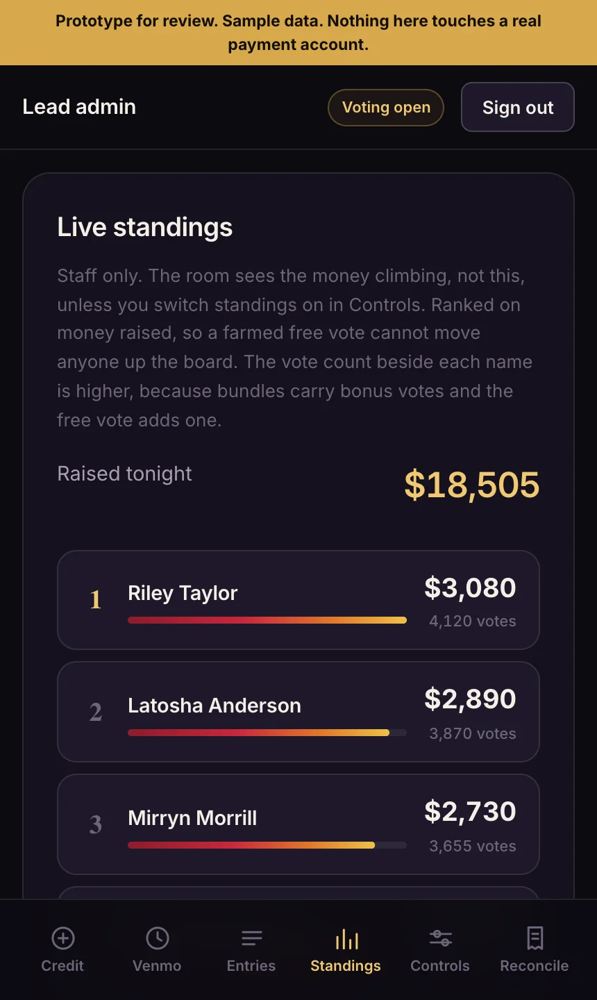

Dancing with the Community Stars, Tuesday 17 November, Heritage Center Theatre. Real lineup, real event details. Tap through it on your phone. Three screens: what the audience uses, what goes on the projector, and what the cash tables run.
The projector leads with the money, not the leaderboard. The admin side is where staff can see who is actually in front.

Giant running total, the goal thermometer, the eight faces and a scan-to-vote QR. No standings unless you ask for them.
Open the big screen →
Live standings for staff, cash and check credits, the Venmo queue, reversals, per-drawer reconciliation, and the switches that decide what the room sees.
Open the admin side →1111 2222 3333 · lead admin, who also gets standings, controls and reconciliation: 9999R standings · D dollar totals · P power hour · F fullscreen9999, go to Controls, switch on "Show standings to the room", then reload the voting page.